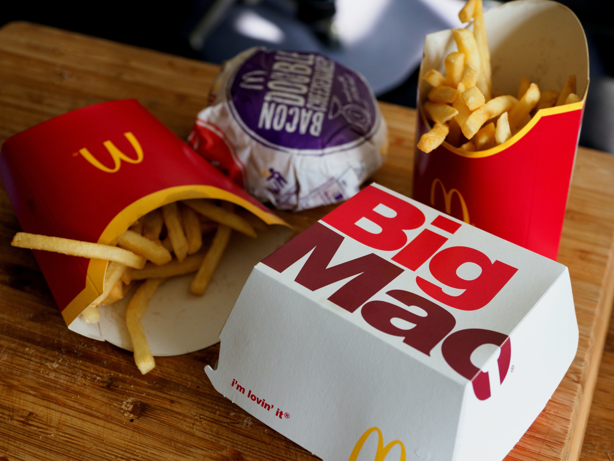

Social Media: The theft of a teenager's self-esteem
Social media is a breeding gound for social comparison which can negatively affect young teens who are vulnerable to manipulation. How does it affect your teen and what can you do to help?

TIM: Food Ordering Apps
Many people utilize food ordering apps for their convenience and discounts, but given their possible effect on consumers spending habits, are they helping or harming their amount spent annually? In this podcast a group of college students discuss topics related to food ordering apps and offer their advice on how to save money when using them.
 Video Description.
Video Description.

Outside Resource
Description.